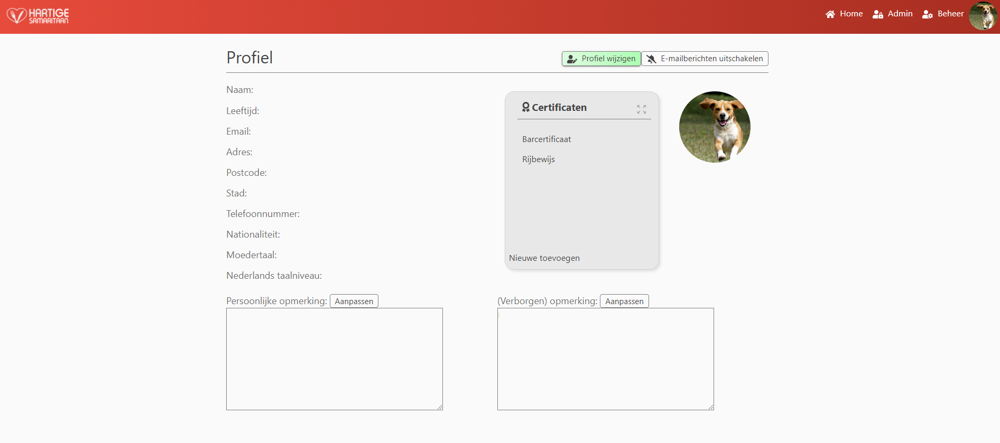
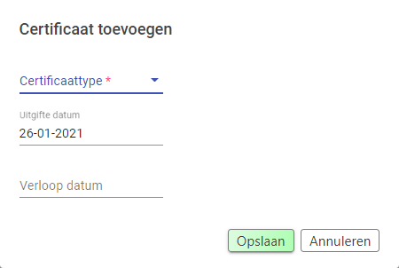
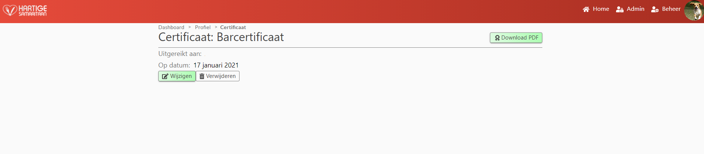

Projectpage

This page displays profile information about a user. Depending on the type of user (participant, manager, administrator), different options are show.
Participant
A participant is only able to view and edit his or her own profile.
The following information is displayed and editable by clicking Profile wijzigen:
- Name;
- Age;
- Email*;
- Address;
- Postalcode;
- City;
- Phone number;
- Nationality;
- Native language;
- Dutch language proficiency;
On this page, a participant is able to place a comment in the Persoonlijk opmerking textfield by clicking Aanpassen.
The (Verborgen) opmerking is not displayed for participants.
A participant is also able to view certificates which have been awarded by an administrator.
A participant is able to change his profile picture by clicking on the picture icon and selecting Wijzig foto.
This same icon allows a participant to delete his profile picture.
Finally, each type of user is able to disable email messages from the system by clicking: E-mailberichten uitschakelen.
Once disabled it the user is able to enable email messages by clicking the button a second time.
Manager
A manager has the same options as a participant but is also able to see and edit profile pages of other participants.
A manager IS able to see and edit the (Verborgen) opmerking field.
Administrator
An administrator has the same options as a manager but is also able to award users with certificates by clicking Nieuwe toevoegen.
A modal wil be opened and the administrator will have to select which certificatetype the certificate belongs to, the date it wil be issued and the date that it will expire (optional).

Certficates
All types of users are able to click on individuel certificates if available.
The user will be redirected to a details page.
On this page the user has the ability to download a certificate in PDF format.
Administrators have the ability to update or delete the specific certificate. 